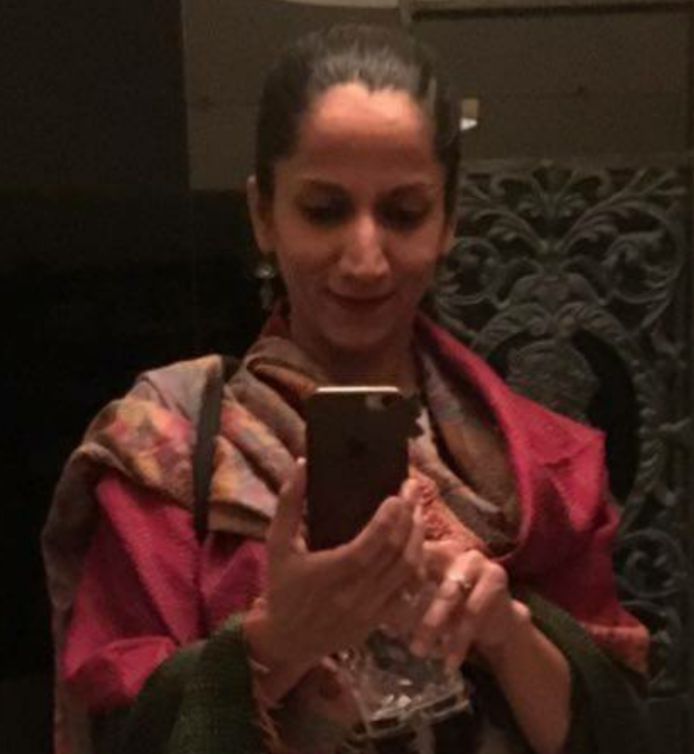

Exhibition Details
Venue: Alliance Française, Karachi
Date: Monday, 7 and 8th May, 2018
Time: 11am-7pm
Exhibition opening & talk by Sadaffe Abid
‘Creating prosperity for artisans through business’
Venue: Alliance Française, Karachi
Date: Monday, 7 May, 2018
Time: 6 pm
About Zein Ahmed
- Zein Ahmed’s journey with ethical design began nearly three decades ago in Lahore. This was the early 1990s, and it marked the beginning of her love for handloom textiles. In 1998 Zein shifted to New York where she became part of the slow fashion movement, setting up her own clothing label, Guru. Her lifestyle range of linen tunics and dresses were borne out of that first impulse—classic silhouettes, crafted with urban flair, and based on social as well as environmentally conscious production modes.
- Zein works with a bold heart (and phenomenal speed). Making Life Matter, her new ensemble line, draws upon a year-long passion project with Sindh-based artisans. She has spent about 8 months in research, before launching production in January this year. The outcome—a limited edition show of 4, 8, and 12-panel kurtas, as well as short tunics, made with pure, breathable fabric.
- Inspired by the practice of ‘truest form,’ Zein engaged traditional, master craftsmen from the region—weaving ustad, Wazir Ali, and ajrak ustad, M. Riaz—in order to develop her base textiles. These were then crafted with embroidery by gifted Sukker-based artisans. ‘The textiles are so happy because of this!—these craftswomen claim what they are working on. 99%, their own ideas.’ Zein’s own guidance has been in terms of fabric quality, input on colour palette, minor feedback on works.
- Good design is then not about the surface of a garment alone. For this designer-entrepreneur, it is about a purity of practice from the ground up. Design, for Zein, resonates all stages of production and artisanal making. There’s something invisible here, in a tunic’s intimate feel. A transparent joy in adornment. Ethical excellence. - *Tankas or embroidery stitches include: hurmich, makri tanka, bharti tanka, kachi sui tanka, kundi, mirror work, and balochi tanka. *Block-print ustad M. Soomro, from Bhit Shah, worked with customised inks and blocks for the blockprint line.
About Sadaffe Abid

Sadaffe Abid is one of Pakistan’s most successful businesswomen. She was the chief executive of the Kashf Foundation, one of the largest microfinance institutions in Pakistan, growing it from a pilot project in two rooms, to serve 300,000 female clients with micro-loans. Ms Abid also co-founded the Buksh Foundation, a Pakistani start-up that enhances financial access to micro entrepreneurs. After 13 years in micro-financing, Ms Abid now splits her time between Dubai and Pakistan, conducting leadership training focused on developing high-potential female professionals and entrepreneurs and emerging talent.